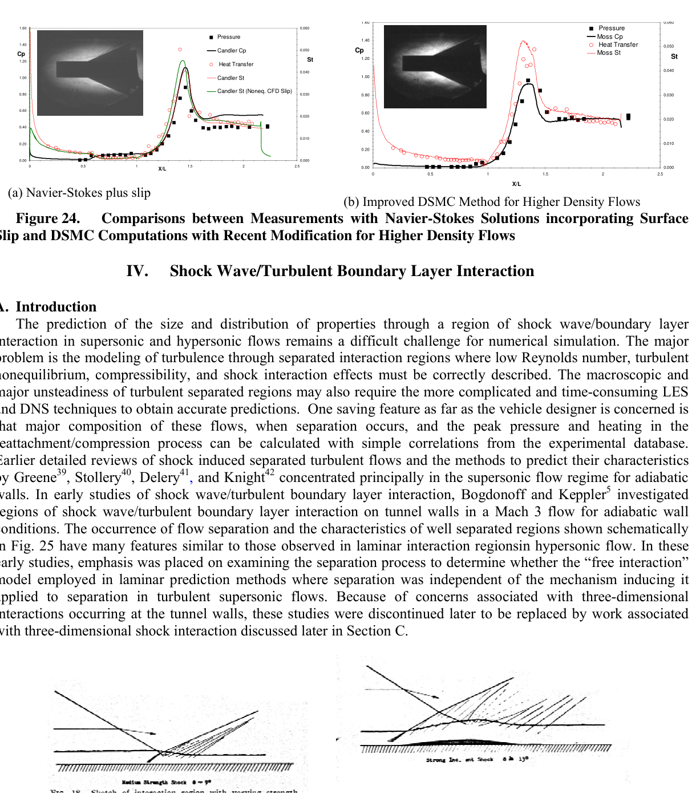
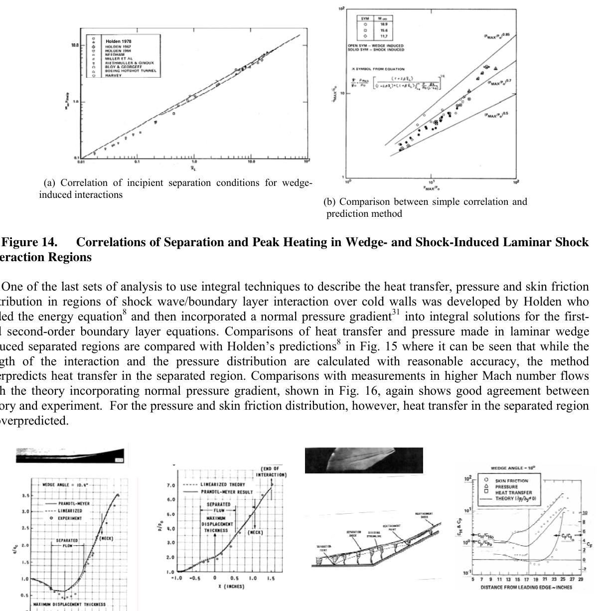
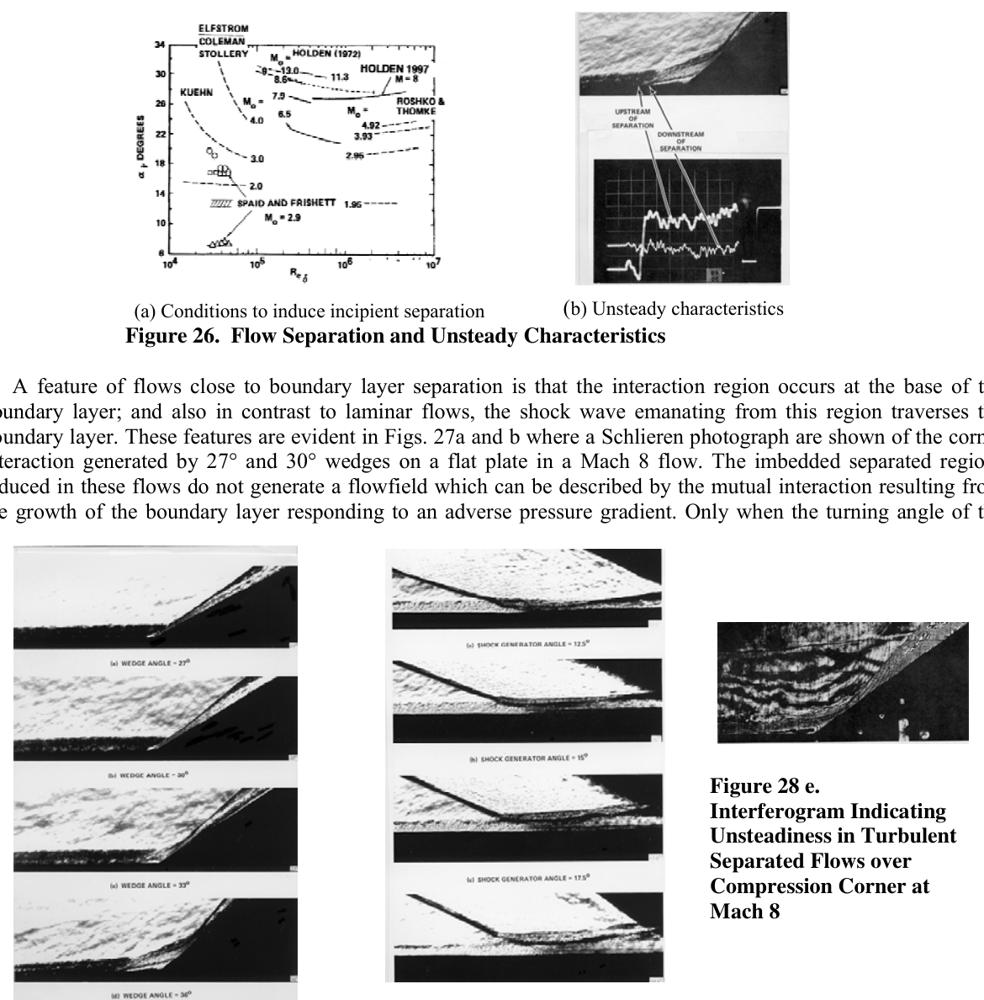
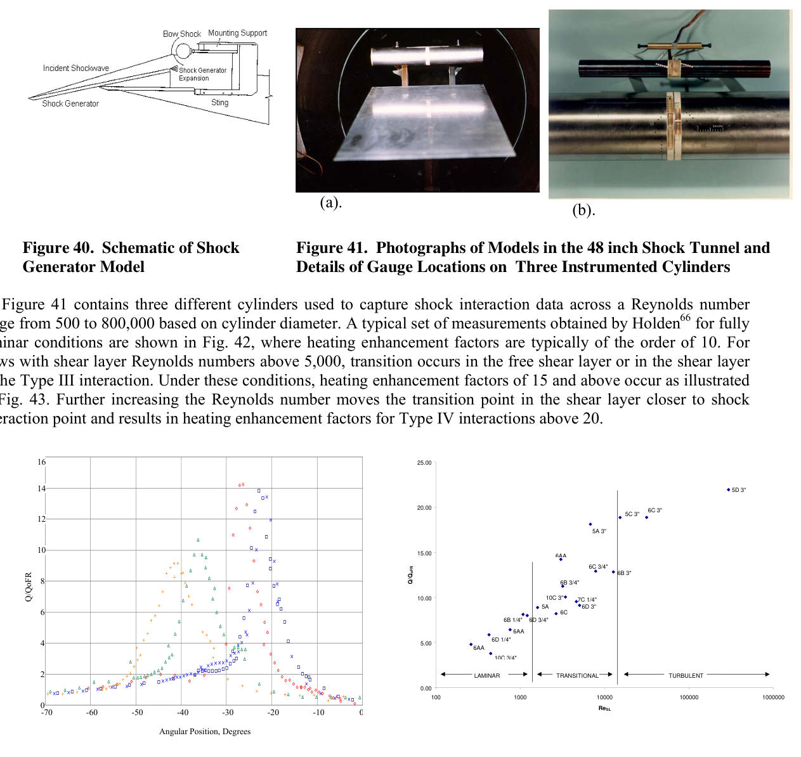

01中文摘要
本文回顾自20世纪40年代以来高超声速激波/边界层干扰（SWBLI）的实验研究与预测方法。内容涵盖早期分离机理与经验关联、基于边界层积分方程的层流干扰预测、尖刺体和凹头等热防护构型的分离流、用于CFD验证的层流与湍流数据集，以及Navier-Stokes和DSMC计算结果与实验的对比。文章还讨论激波/激波干扰、湍流干扰关联式，并指出未来需在流场化学、壁面与剪切层转捩、压缩性、激波-湍流相互作用和大尺度非定常性等方面发展模型。
原始摘要（英文/原文）
A historical review is presented of studies to examine the characteristics of regions of shock wave/boundary layer interaction in hypersonic flow to develop empirical, analytical and numerical prediction methods to describe these flows. We first review studies, starting in the early 1940s, to understand the flow mechanisms associated with boundary layer separation to develop empirical correlations and boundary layer methods to describe the characteristics of separated regions induced by shock wave/boundary layer interaction. We then discuss studies of separated flows over spiked bodies and indented nose shapes conducted to examine novel solutions for thermal protection systems and as test cases for CFD code validation. The early experimental studies to understand the characteristics of laminar interaction regions are reviewed together with predictions based on integral solutions to the boundary layer equation. Recent experimental studies to generate datasets for CFD validation are compared with the most recent Navier-Stokes and DSMC solutions. Studies to examine the characteristics of shock- and wedge-induced turbulent interaction regions are discussed together with correlations of their major characteristics and NavierStokes predictions. Experimental studies of shock/shock boundary layer interaction are reviewed together with prediction methods. This paper concludes with requirements for future research to develop models to describe effects of flowfield and surface chemistry, wall and shear layer transition, compressibility, shock turbulence interaction, and large-scale unsteadiness on models of turbulence to describe attached and separated regions of shock wave/boundary layer interaction.
02阅读说明
类型：会议综述（AIAA 2006-494，44th AIAA Aerospace Sciences Meeting，2006年1月，Reno，26页）。材料为26页全文与16幅抓取图件；文本层完整可读，但图内数值不能逐点读取，全文无表格。信息完整度：历史脉络、定性结论与部分定量特征（分离角、热流增强倍数、Re阈值）较完整；具体风洞来流条件、模型尺寸、测量不确定度及网格/湍流模型细节大量缺失。本文不含作者自己的推导，仅有对经验关联式的引用。 文章类型：会议、综述
03一句话核心与三句话摘要
综述60年高超声速SBLI实验与预测：层流NS/DSMC已能准确复现，湍流、转捩与真实气体仍是主要瓶颈。
- 高超声速激波/边界层与激波/激波干扰产生极大气动热载荷，是热防护系统设计中最难预测的问题之一。 AI概括
- 作者按时间回顾了尖刺体与凹鼻分离流、自由干扰积分方法、Navier–Stokes/DSMC代码验证、湍流与三维扫掠干扰、激波/激波干扰及真实气体效应，并对比大量实验与计算。 原文明确
- 结论是：无化学反应的层流复杂干扰区已可由NS/DSMC准确预测；湍流分离区尺寸与热流分布、转捩、真实气体和主动冷却仍是未解决问题。 原文明确
04核心内容清单
| 要点 | 类型 | 重要性 | 原文依据 | 属性 |
|---|---|---|---|---|
| 全层流时尖刺可使平板端圆柱前端面总热流降低50%，但剪切层转捩后再附热流使积分热载超过无尖刺体，工程上不实用。 | 历史实验结论 | A | p3，§II.A，Figs. 1–3 | 原文明确 |
| 凹鼻/烧蚀鼻锥再附区热流超过驻点2倍以上；粗糙度使分离区变长、再附热流约为光滑体2倍并超过驻点3倍。 | 历史实验结论 | A | p4，§II.B，Figs. 5–6 | 原文明确 |
| 无化学反应的层流复杂干扰区（双锥、圆柱/喇叭口，含低密度滑移与DSMC）已可由NS/DSMC准确预测。 | 代码验证结论 | A | p6、p12–13，§II.D、§III.E，Figs. 8–9、23–24 | 原文明确 |
| 自由干扰/动量积分方法适用于超声速绝热壁，但在高超声速冷壁、干扰区仅4–5δ时失效；Holden积分法高估分离区热流。 | 方法评价 | A | p7–9，§III.A–B，Figs. 11–16 | 原文明确 |
| 早期NS对附着/小分离区很准，却低估24°楔的大分离区；后续CFL3D三维计算与实验吻合，但欧洲盲比暴露网格与数值耗散导致的分散。 | 历史评价 | B | p9–11，§III.C–D，Figs. 17–22 | 原文明确 |
| 高超声速湍流边界层难分离：30°压缩面/15°激波发生器仍附着，楔角33°开始上游传播、36°充分分离，分离激波在17°以上出现。 | 实验规律 | A | p14–15，§IV.B，Figs. 26–28 | 原文明确 |
| 充分分离时分离点沿流向波动约2/3边界层厚度，分离起始判定本身因非定常而困难。 | 非定常特征 | A | p15，§IV.B，Fig. 26b | 原文明确 |
| Mach 11下不同湍流模型给出差别很大的分离长度与压升，峰值尚可、分离区热流分布不可靠；“目前没有可靠方法”预测湍流分离区尺寸与分布。 | 预测能力评估 | A | p15，§IV.B，Fig. 32 | 原文明确 |
| 起始分离、平台压力、再附峰值热流可分别用M∞、总压升、上游摩阻及压升幂律关联，可供工程设计估算。 | 经验关联 | A | p8、p15、p21，Figs. 14、29–31、48 | 原文明确 |
| 三维扫掠/偏斜干扰对湍流模型较不敏感、受无粘效应主导；M=11、Re=30×10^6下横流影响很小，分离长度略减。 | 三维干扰规律 | A | p16–17，§IV.C，Figs. 33–38 | 原文明确 |
| 激波/激波干扰热流可超过驻点30倍；层流增强约10倍，剪切层Re>5,000转捩后15倍以上，IV型更高；峰值位置随Re由35°移至20–25°。 | 激波/激波规律 | A | p18–21，§V，Figs. 42–43、48–49 | 原文明确 |
| 空气14,000 ft/s下实测分离区明显大于预测；14,000 ft/s以上真实气体/化学模型缺乏确定性验证。 | 真实气体局限 | A | p22–23，§VI，Figs. 55–56 | 原文明确 |
05引言：研究问题与领域缺口
第I节（p1–2）指出，激波/边界层与激波/激波干扰产生的气动热载荷是高超声速飞行器设计者面临的最大挑战之一：超高速下干扰区自由剪切层在相对低雷诺数即转捩，且可能宏观非定常；超声速中干扰主要影响定常/非定常气动载荷，高超声速中则因大载荷与热梯度直接影响热防护系统。作者回顾二战期间英美的早期研究，以及普林斯顿Crocco、Lees、Bogdonoff等人的工作：Crocco–Lees混合理论奠定湍流SBLI物理基础，Bogdonoff–Keppler提供实验支撑，Bogdonoff–Vas研究尖刺体，随后凹鼻/烧蚀鼻锥成为复杂流动考核算例。早期预测以入射激波与平板楔压缩为主：Lees–Reeves用动量积分与“自由干扰”模型计算绝热壁超声速分离，Holden加入能量方程与法向压力梯度推广到高超声速冷壁，但作者指出强干扰下的大流向/法向梯度无法用一阶或二阶边界层理论准确描述，高速计算机使直接求解NS成为可能；然而层流NS解虽在1970年代中期已出现，网格与数值问题又用了约30年才解决（p2）。湍流SBLI的尺寸与热流/压力分布仍是主要难题，低Re湍流的大尺度非定常甚至需要非定常NS、DNS、LES；三维扫掠/偏斜干扰（鳍、进气道）与燃烧耦合更使湍流建模极其困难。缺口是：需要在定义良好的几何与边界条件下取得细致测量，并与计算结合检验湍流模型。本文目标即按上述主题作历史综述，并给出未来研究需求（p2）。
06流动条件与几何构型
| 项目 | 数值/描述 | 依据 | 备注 |
|---|---|---|---|
| 综述范围 | 高超声速与超声速SBLI、激波/激波干扰；时间跨度1940年代–2006年；层流与湍流、实验与预测 | p1–2，Abstract、§I | |
| 尖刺体（spiked body） | 全层流条件；具体M∞、Re、总焓文中未提及；另有转捩剪切层工况作对比 | p3，§II.A，Figs. 1–3 | |
| 凹鼻/烧蚀鼻锥（NRV、RTE） | 复现飞行条件的高焓试验；具体M∞、Re、总焓与模型尺寸文中未提及；含光滑与粗糙“理想”烧蚀形状 | p4，§II.B，Figs. 4–6 | |
| AFOSR双锥代码验证 | 高焓、氮气为试验气体以抑制非平衡化学；较宽Re范围；低Re段保证全层流并可用DSMC；具体M∞、Re、总焓文中未提及 | p6，§II.D，Figs. 8–9 | |
| Mach 3平板湍流干扰 | M=3，绝热壁，Bogdonoff–Keppler tunnel-wall 实验 | p13，§IV.A，Fig. 25 | |
| Mach 8压缩拐角 | M=8，平板+楔，楔角27°、30°、33°、36°；壁温条件文中未提及 | p14，§IV.B，Figs. 27–28 | |
| Mach 8入射激波干扰 | M=8，流转向角大于30°；分离激波在发生器角大于17°时出现在入射激波前 | p14–15，§IV.B，Fig. 28 | |
| Mach 11激波致分离（Horstman） | M=11，多种湍流模型对比；具体Re与模型尺寸文中未提及 | p15，§IV.B，Fig. 32 | |
| Mach 11扫掠/偏斜激波 | M=11，Re=30×10^6，ΘSG=12.5°（近起始分离）与15°（充分分离），扫掠角0°与30° | p17，§IV.C，Figs. 36–38 | |
| 层流楔致干扰（Fig. 13） | M∞=11.7，Re/ft=1.70×10^5；起始分离楔角略大于10° | p8，Fig. 13 | |
| Mach 14平板/楔 | M=14，Holden实验，楔角含24°（大分离）；具体Re文中未提及 | p9，§III.C，Figs. 17–18 | |
| 激波/激波层流试验 | 以前缘直径为参考长度的Re=10^3–10^4，跨越非连续—连续流区；三个圆柱以直径为参考长度覆盖Re=500–800,000 | p18–19，§V.B，Figs. 40–41 | |
| 激波/激波转捩/湍流 | 剪切层Re_SL>5,000开始转捩；体径Re≥10^4出现转捩；Re>10^5剪切层转捩、峰值位置移至轴线下20–25° | p19、p21，§V.B、§V.D，Figs. 42–43 | |
| 高超声速起始分离 | 压缩面转捩角30°、激波发生器角15°仍附着；超声速下转捩角低于14°即分离 | p14，§IV.B，Fig. 26 | |
| 真实气体对比 | 空气与氮气，速度14,000 ft/s；另有NASA CF4与欧洲Halis高焓初步实验；具体M∞、Re、总焓文中未提及 | p22–23，§VI，Figs. 55–56 |
07核心现象与关键参数
| 参数 | 定义 | 数值 | 关系/说明 | 依据 |
|---|---|---|---|---|
| 超声速湍流起始分离角 | 压缩拐角或激波发生器使湍流边界层起始分离的流转向角 | 低于14°即分离（超声速）；高超声速压缩面约30°、激波发生器约15°仍附着 | p14，§IV.B，Fig. 26a | |
| 楔致充分分离角 | Mach 8平板上楔角 | 33°开始向上游传播，36°形成充分分离与压力平台 | p14，§IV.B，Figs. 27c–d | |
| 激波致分离起始角 | Mach 8入射激波发生器的流转向角 | 大于17°时分离激波出现在入射激波前；大于30°出现分离流 | p15，§IV.B，Fig. 28 | |
| 分离点流向波动幅值 | 充分分离湍流中分离点沿流向的脉动范围 | 约2/3边界层厚度 | p15，§IV.B，Fig. 26b | |
| Mach 11分离区长度 | 扫掠/偏斜激波（ΘSG=15°、扫掠30°）下分离区流向长度 | 约2 in. | p17，§IV.C | |
| 层流激波/激波热流增强因子 | 峰值热流与无干扰驻点热流之比 | 约10 | p19，§V.B，Fig. 42 | |
| 转捩/湍流激波/激波热流增强因子 | 剪切层转捩后峰值热流与驻点热流之比 | 15以上；IV型更高可达20以上；总载荷可超过驻点30倍 | p18–19，§V.A–B，Figs. 43 | |
| 剪切层转捩雷诺数 | 以剪切层为参考的Re_SL | 约5,000以上转捩；体径Re≥10^4出现转捩 | p19、p21，§V.B、§V.D | |
| 峰值热流—峰值压力关联 | q_pk/q_stag,∞≈C(p_pk/p_stag,∞)^n | n=1.3，C=1.05（Fig. 48） | q_pk/q_stag,∞≈C(p_pk/p_stag,∞)^n | p21，§V.D，Fig. 48 |
| 峰值位置随Re变化 | 激波/激波峰值热流相对模型轴线的角位置 | 转捩初现于IV型再附区时约35°；Re>10^5后约20–25° | p21，§V.D | |
| Korkegi起始分离关联 | 低马赫数下起始分离流转向角与来流马赫数的关系 | 原文印作“Θwi = 0.3 Mo”；2<M<3.4时p1/p2与M无关 | Θwi = 0.3 Mo（原文如此，疑为0.3/M∞，受限于材料，无法确认） | p16，§IV.C |
| 平台压力/起始分离关联 | 以粘性干扰参数或高超声速相似参数关联楔致与激波致干扰 | 文中给出关联图（Figs. 14、29–30），未给拟合式 | p8、p15，Figs. 14、29–30 |
08方法与数据
本文是历史综述，不包含新的实验或计算。综述范围覆盖1940年代至2006年的高超声速与超声速SBLI研究，按主题分为：尖刺体与凹鼻分离流（第II节，p3–6）；层流SBLI的测量、关联与预测（第III节，p7–13）；激波/湍流边界层干扰（第IV节，p13–18）；激波/激波/边界层干扰（第V节，p18–21）；真实气体效应（第VI节，p22–23）。所引实验设施包括CUBRC的48英寸激波风洞（p19）、ONERA风洞（p11）、欧洲高焓设施与NASA的CF4实验（p22）；测量手段包括薄膜热流计（Fig. 9a标注THIN FILMS）、压力传感器、表面摩阻天平（p8，Fig. 13）、纹影（p14，Figs. 27–28）、干涉图（p14，Fig. 28e）与皮托压力（p17）。预测方法覆盖Crocco–Lees/Lees–Reeves/Nielsen等动量积分与自由干扰方法、Holden的一阶/二阶边界层积分（含能量方程与法向压力梯度）、MacCormack及CFL3D等NS求解器、Candler与Gnoffo的NS解、Bird等的DSMC，以及LES/DNS。验证方式包括AFOSR/RTO资助的“盲比”代码考核（双锥、圆柱/襟翼、空心圆柱/喇叭口等，p6、p11–13）以及实验/计算分布对比。综述未说明文献检索与纳入标准，未给出各工况不确定度、网格量与湍流模型细节。
| 项目 | 内容 | 依据 | 备注 |
|---|---|---|---|
| 研究类型 | 历史综述；无新实验、无新计算 | p1–2，Abstract、§I | |
| 综述结构 | 第II节尖刺体/凹鼻；第III节层流SBLI；第IV节湍流SBLI与三维扫掠；第V节激波/激波；第VI节真实气体；第VII节结论 | p2–24 | |
| 文献检索与纳入标准 | 文中未提及 | 全文 | |
| 实验设施 | CUBRC 48英寸激波风洞（p19）；ONERA风洞（p11）；欧洲高焓设施与NASA CF4实验（p22）；AFOSR双锥/圆柱喇叭口考核（p6、p12） | p6、p11–12、p19、p22 | |
| 热流测量 | 薄膜热流计（Fig. 9a标THIN FILMS）；文中未给厚度、灵敏度与不确定度 | p6，Fig. 9；全文 | |
| 压力与摩阻测量 | 表面压力传感器；表面摩阻天平（用于起始分离判定，Figs. 13、26b） | p8、p14 | |
| 流场显示 | 纹影（Mach 8楔与入射激波，Figs. 27–28）；高速干涉图（Fig. 28e）；皮托压力排（p17） | p14、p17 | |
| 积分/边界层预测 | Crocco–Lees混合理论、Glick修正、Honda、Lees–Reeves、Nielsen–Goodwin–Kuhn；Holden加入能量方程与法向压力梯度 | p7–9，§III.A–B | |
| NS求解器 | MacCormack、Hung–MacCormack、CFL3D（Rudy等）、Candler、Gnoffo；含低密度滑移修正 | p9–13，§III.C–E | |
| DSMC | Bird等改进的DSMC，用于低密度连续/非连续过渡区；高密度性能经改进 | p6、p12–13 | |
| 湍流模拟 | RANS（多种湍流模型，Horstman对比）；LES/DNS用于低Re，实用Re>10^7尚不可及 | p15，§IV.B | |
| 代码验证方式 | AFOSR/RTO盲比：双锥、圆柱/喇叭口、空心圆柱/喇叭口、Hyperboloid/Flare、Halis；两轮测量（高密度/低密度） | p6、p11–13 | |
| 试验气体 | 氮气（双锥，抑制非平衡化学）；空气与氮气对比（真实气体，14,000 ft/s）；CO2（后续研究） | p6、p22–23 | |
| 网格、y+与湍流模型细节 | 文中未提及 | 全文 | |
| 不确定度与重复性 | 文中未提及；仅称ONERA热流数据分辨率不足以得出强结论（p20） | p20，全文 |
09核心推导与公式
原文未给出从守恒律出发的完整解析推导；以下仅列出材料中可核对的定义或建模链，不补写教科书推导。
本文为历史综述，不含作者自己的推导。文中出现的定量关系均为引用或拟合：Korkegi起始分离关联、平台压力/起始分离的相似参数关联、再附峰值热流的压升幂律 q_pk/q_stag,∞≈C(p_pk/p_stag,∞)^n（n=1.3、C=1.05）。这些是经验/半经验关联，不是从控制方程出发的推导。
适用边界：综述未给关联式的推导、适用Re/M范围、拟合数据量与误差；幂律关联的C、n仅由图48读出；Korkegi关系在Goldberg（M=6）与Holden（M=11）数据上不成立；平台压力与起始分离关联的坐标定义与常数未在文中给出，无法直接复现。
10结果：主要发现与关键证据
尖刺体（p3，Figs. 1–3）：全层流时尖刺使钝头体总热流下降，Bogdonoff–Vas给出前端面总热流降低50%；但剪切层一旦转捩，再附区高热流使所有尖刺长度的积分热载超过无尖刺圆柱，加上对偏航极敏感，工程上被判为不实用。凹鼻/烧蚀鼻锥（p4，Figs. 4–6）：再附区热流超过驻点2倍以上；表面粗糙度使嵌入分离区变长，再附热流约为光滑体2倍、超过驻点3倍。Widhopf–Victoria对Widhopf 1/2凹鼻的首批非定常NS解预测了流动不稳定性，时间平均值与Holden测量基本一致（p5，Fig. 7）。层流验证（p6、p12–13，Figs. 8–9、23–24）：AFOSR双锥在氮气、高焓、全层流条件下，Candler与Gnoffo的NS解与压力/热流测量“excellent agreement”；低密度用滑移NS与改进DSMC亦一致；圆柱/喇叭口构型经第二轮低密度测量后，NS与DSMC均能描述层流分离区。积分方法（p7–9，Figs. 10–16）：Lees–Reeves与Nielsen等对超声速绝热壁层流干扰与实验合理吻合，但高超声速冷壁下干扰仅在4–5个边界层厚度内完成、再附曲率产生显著法向压力梯度，积分方法失效；Holden加入能量方程与法向压力梯度后，干扰长度与压力分布尚可，但分离区热流被高估。早期NS（p9–10，Figs. 17–19）：Hung–MacCormack对Mach 14平板/楔的计算在附着与小分离区与实验“remarkably good”，但24°楔的大分离区被显著低估；Rudy等用CFL3D考虑三维效应后，楔致与激波致分离均与测量很好吻合。欧洲研究（p11，Figs. 20–22）：ONERA空心圆柱/喇叭口的多人盲比在分离长度与干扰区上下游压力上出现显著分歧，作者归因于网格与数值耗散。湍流干扰（p14–15，Figs. 26–31）：高超声速下湍流边界层更难分离，压缩面转捩角30°、激波发生器15°仍附着；楔角33°时干扰开始向拐角上游传播，36°形成充分分离；入射激波流转向角大于30°、分离激波在17°以上才出现在入射激波前；充分分离时分离点沿流向波动约2/3边界层厚度。分离起始条件、平台压力与再附峰值热流可分别用自由来流马赫数、总压升、上游摩阻及压升的幂律关联。湍流模型（p15，Fig. 32）：Horstman对Mach 11分离流的多种湍流模型给出差别很大的分离长度与压升，多数能算再压缩末端峰值，但不能给出分离区热流分布；“目前没有可靠方法预测激波致湍流分离区尺寸及热流/摩阻分布”。三维扫掠（p16–17，Figs. 33–38）：Korkegi给出低马赫数起始分离角随1/M变化（原文印作“Θwi = 0.3 Mo”），2<M<3.4时p1/p2与M无关；Goldberg（M=6）与Holden（M=11）的数据不符合该关联；三维数据反而比二维更不受湍流模型影响、与NS吻合更好，峰值压力/平台压升可用无粘关系（Reshotko–Tucker）描述；Holden在M=11、Re=30×10^6、ΘSG=12.5°/15°、扫掠0°/30°下测得约2 in.长的分离区，横流对尺寸与特性影响很小，若有影响则是分离长度略减，与Mach 3下Settles–Bogdonoff的趋势相反；峰值热流仍服从压升幂律。激波/激波（p18–21，Figs. 39–49）：Edney分类中IV型射流在层流下热流最高，III型剪切层转捩后热流可更高；典型载荷可超过无干扰驻点热流30倍，曾导致X-15支架烧毁；层流干扰需在前缘直径Re=10^3–10^4下试验，圆柱考核件覆盖直径Re=500–800,000；层流峰值增强约10倍，剪切层Re>5,000转捩后达15倍以上，Re再升高IV型可超过20倍；转捩先在IV型再附压缩区出现，峰值位于轴线下约35°，体径Re>10^5后剪切层转捩、峰值移至轴线下20–25°；峰值热流与峰值压力可用q_pk/q_stag,∞≈C(p_pk/p_stag,∞)^n关联，图中给出n=1.3、C=1.05。真实气体（p22–23，Figs. 50–56）：空气14,000 ft/s下实测分离区明显大于预测、再附热流与压力也与计算不符；14,000 ft/s以上除NASA的CF4与Halis初步实验外无确定性验证数据；STS-1控制面异常的真实气体解释仍缺直接实验证据。
| 发现 | 证据 | 证据类型 | 强度 | 位置 | 属性 |
|---|---|---|---|---|---|
| 无化学反应的层流复杂干扰区已可由NS/DSMC准确预测，包括双锥、圆柱/喇叭口及低密度滑移区。 | AFOSR双锥NS/DSMC与测量“excellent agreement”（Figs. 8–9）；圆柱/喇叭口两轮考核（Figs. 23–24） | 代码验证 | 强 | p6、p12–13，§II.D、§III.E | 原文明确 |
| 自由干扰/动量积分方法在超声速绝热壁可用，但在高超声速冷壁、干扰区仅4–5δ时失效，且高估分离区热流。 | Lees–Reeves/Nielsen与超声速实验合理吻合；Holden积分法在楔致分离中压力/长度尚可、热流偏高（Figs. 15–16） | 方法对比 | 强 | p7–9，§III.A–B | 原文明确 |
| 高超声速湍流边界层显著更难分离：30°压缩面/15°激波发生器仍附着，楔33–36°、激波17°才充分分离。 | Mach 8纹影与摩阻测量（Figs. 26–28）；与超声速<14°分离对比 | 实验规律 | 强 | p14–15，§IV.B | 原文明确 |
| RANS湍流模型对分离长度与压升给出显著分散，峰值热流/压力尚可但分离区热流分布不可靠。 | Horstman Mach 11多模型对比（Fig. 32）；作者明确“no reliable techniques” | 模型对比 | 强 | p15，§IV.B，Fig. 32 | 原文明确 |
| 三维扫掠/偏斜干扰对湍流模型较不敏感、受无粘效应主导；M=11下横流影响很小，分离长度略减。 | 三维数据与NS总体吻合优于二维；Holden M=11、Re=30×10^6、扫掠0°/30°对比（Figs. 36–38） | 跨工况比较 | 中 | p16–17，§IV.C | 原文明确 |
| 激波/激波热流随剪切层Re分档：层流约10倍、转捩后15倍以上、IV型可超20倍，总载荷可超驻点30倍。 | 圆柱试验Re=500–800,000；Re_SL>5,000转捩（Figs. 42–43） | 实验规律 | 强 | p18–21，§V | 原文明确 |
| 峰值热流可由峰值压力幂律关联（n=1.3、C=1.05），为转捩/湍流激波/激波热载提供工程估算途径。 | Fig. 48的q_pk/q_stag,∞对p_pk/p_stag,∞拟合；Fig. 49的压力/热流放大因子关联 | 经验关联 | 中 | p21，§V.D，Figs. 48–49 | 原文明确 |
| 空气14,000 ft/s下实测分离区明显大于预测，再附热流/压力与计算不符，真实气体模型缺乏验证。 | 空气/氮气对比（Figs. 55–56）；STS-1控制面异常缺直接实验证据 | 实验—计算对比 | 中 | p22–23，§VI | 原文明确 |
| 尖刺体与凹鼻的层流分离可降低热载，但转捩后再附热流可超过无干扰值；粗糙度使再附热流约翻倍。 | 尖刺体总热流降50%但转捩后超基线（Fig. 3）；凹鼻再附>2倍驻点、粗糙度>3倍（Figs. 5–6） | 历史实验 | 中 | p3–4，§II.A–B | 原文明确 |
11机制解释与论证链
作者给出的机制图景：压缩拐角或入射激波施加逆压梯度，边界层先增厚；层流时粘性与无粘流相互作用的“自由干扰”使压力沿流向逐渐上升并在分离点前展布，分离后形成剪切层与回流区，再附压缩产生峰值热流/压力。高超声速冷壁下干扰区被压缩到4–5个边界层厚度，再附强曲率产生显著法向压力梯度，故一阶/二阶边界层理论失效。湍流时边界层更耐逆压梯度，需更大转捩角才分离；分离起始本身非定常，分离点前后波动，剪切层大尺度结构可能使流动宏观非定常，RANS难以描述。三维扫掠/偏斜激波下，干扰由无粘波系与横流主导，湍流模型影响反而减小。激波/激波干扰按Edney分类：IV型产生射向壁面的喷流并形成局部驻点，层流下热流最高；III型形成自由剪切层，剪切层在低Re（约5,000）即转捩，转捩后峰值热流可高于IV型层流值。真实气体/化学非平衡改变激波层与边界层温度、组分与转捩，进而改变分离区尺寸与再附热载；空气14,000 ft/s下实测分离区大于预测，说明现有模型不足。以上机制为原文明确与AI概括的整合，文中未给出各机制的定量判别式。
12讨论：结论、贡献与局限
作者的论证链是：早期边界层积分/自由干扰方法在超声速绝热壁成功，说明层流分离在一定程度上由粘性—无粘“自由干扰”控制；但高超声速冷壁干扰区压缩到4–5个边界层厚度、再附强曲率产生法向压力梯度，积分方法的近似失效，必须直接求解NS。层流NS/DSMC经过30年的网格与数值方法成熟，已在双锥、圆柱/喇叭口等构型、包括低密度滑移区，与实验达到很好一致，故“无化学反应的层流干扰”基本解决。湍流则不同：高超声速湍流边界层难分离、分离起始本身非定常，RANS湍流模型对分离长度与压升给出分散结果，峰值热流/压力尚可、分布不可靠；低Re大尺度非定常可能需要LES/DNS，但后者受Re限制（实用Re>10^7尚不可及）。因此工程上暂时依赖经验关联（起始分离、平台压力、峰值热流幂律）作设计估算，同时用NS算压力、再用热流—压力放大因子关联求热流。三维扫掠干扰因受无粘效应主导，反而对湍流模型较不敏感。激波/激波干扰的峰值热流由剪切层转捩控制，转捩Re阈值低（约5,000），故大多数III/IV型干扰实际是转捩/湍流状态，预测极难。真实气体与表面化学使问题进一步复杂：空气高超声速下分离区被低估，现有化学模型在14,000 ft/s以上缺乏验证。作者据此把未来重点放在化学、转捩、湍流/激波干扰、燃烧与主动冷却的模型开发与实验验证上。上述为原文明确与AI概括的整合；文中未给出各机制的定量判别准则。
作者结论
作者结论（p23–24）：过去50年计算能力与可靠的NS/DSMC求解器的发展，已基本消除用边界层理论模化粘性/无粘干扰的必要；数值研究重点转向物理模型（表面与流场化学、壁面与剪切层转捩、强逆压/激波/化学作用下的湍流发展、燃烧）的开发与验证。流场化学对层流SBLI有显著影响，12,000 ft/s以上需进一步开发与验证化学模型；高超声速边界层/剪切层转捩极其重要，转捩SBLI预测仍处于起步阶段；湍流分离区预测受非平衡转捩、低Re、压缩性、激波/湍流干扰及宏观不稳定性困扰。未来需要表面与流场平均值/脉动值并重的精细实验，与RANS及LES/DNS计算紧密结合；燃烧湍流干扰（超燃冲压燃烧室）与主动冷却（烧蚀、膜冷却、发汗冷却）及粗糙度/吹气耦合的SBLI仍是重要空白。
主要贡献
- 按时间系统梳理了1940年代至2006年高超声速SBLI实验与预测方法的发展脉络。
- 把尖刺体/凹鼻、层流SBLI、湍流SBLI、三维扫掠干扰、激波/激波干扰与真实气体效应纳入统一叙述，并给出各阶段的代表性数据与代码考核案例。
- 明确指出层流无化学干扰已由NS/DSMC解决，而湍流分离区尺寸/热流分布仍无可靠预测方法。
- 汇总了起始分离、平台压力、峰值热流的经验关联及激波/激波热流—压力幂律，便于工程设计快速估算。
- 提出化学、转捩、湍流/激波干扰、燃烧与主动冷却五方面的未来研究需求。
局限与未解决问题
作者承认：湍流SBLI的尺寸与热流/压力分布预测仍是主要挑战；低Re湍流宏观非定常可能需LES/DNS，但后者受Re限制；目前没有可靠方法预测激波致湍流分离区尺寸与热流/摩阻分布；高超声速湍流实验数据与已验证模型都明显少于超声速；真实气体/化学模型在14,000 ft/s以上缺乏确定性实验验证；转捩SBLI建模“仍处于起步阶段”。AI识别的局限：本文是叙述性历史综述，未说明文献检索与纳入标准，未做定量meta分析；未列表汇总各工况的M∞、Re、总温总压、壁温、模型尺寸，无法据此复现或比较；图内数值不可读，所有增强因子/角度/Re阈值只能按正文引用；未给测量不确定度、网格量、y+与具体湍流模型；对“NS/DSMC已完全解决层流”的结论主要基于作者所在CUBRC/AFOSR案例，可能存在选择偏差；对三维干扰与横流影响的结论仅基于少量M=3与M=11数据。
13对高速流动与工程的意义
对高速流动与工程的意义（含AI推断）：本文可作为高超声速SBLI“能力边界”的判据——层流无化学干扰可用NS/DSMC做定量预测，湍流分离区则只能依赖经验关联与峰值估算，设计时应预留热载裕度。对热防护系统，激波/激波干扰（尤其III/IV型、剪切层转捩）可产生10–30倍驻点热流，是前缘、翼前缘、控制面与支架的重点；对进气道/隔离器，高超声速湍流难分离意味着可用更大压缩角而不分离，但一旦分离，分离区尺寸与压力分布难以预测；对三维扫掠/偏航干扰，无粘主导意味着可用较简单的无粘关系估算峰值压力，但热流仍需经验幂律；对真实气体再入（>14,000 ft/s），现有模型可能低估分离区与再附热载。本文不能回答：具体构型在给定M/Re/壁温下的分离长度与热流分布、转捩位置、湍流模型选择依据、主动冷却下的SBLI，以及定量的不确定度。
14核心图件




15可引用原文素材
| 原文短句 | 可支持的观点 | 位置 | 使用建议 |
|---|---|---|---|
| “the large loads and thermal gradients generated in these regions have a major impact on thermal protection systems” | SBLI是高超声速热防护的核心问题 | p1，§I | 作为研究动机引用 |
| “the addition of the spike caused a 50 percent reduction in the total heat transfer” | 层流尖刺体降热50% | p3，§II.A | 历史数据引用，需注明全层流条件 |
| “while the length of the interaction and the pressure distribution are calculated with reasonable accuracy, the method overpredicts heat transfer in the separated region” | 积分方法高估分离区热流 | p9，§III.B | 评价边界层积分方法 |
| “both the Navier-Stokes and DSMC methods are fully capable of describing laminar regions of separated flows” | 层流分离区已被NS/DSMC解决 | p12，§III.E | 支撑层流预测能力结论 |
| “the various turbulence models employed in the calculations produce very different answers for the separation length and the pressure rise” | 湍流模型对分离长度/压升分歧大 | p15，§IV.B | 说明湍流预测不可靠 |
| “there have been no reliable techniques for predicting the size shock-induced turbulent separated regions” | 湍流分离区尺寸无可靠预测 | p15，§IV.B | 作为能力边界的关键引文 |
| “transition in this shear layer can result in even higher heating levels” | III型剪切层转捩可超过IV型层流热流 | p18，§V.A | 说明转捩对激波/激波热载的重要性 |
| “the measured separated region is significantly larger than predicted” | 真实气体空气流中分离区被低估 | p23，§VI | 支撑真实气体模型不足的结论 |
16最终核验
| 核验项 | 结论 |
|---|---|
| 仅基于全文 | 是：仅使用bundle全文、图注与图件清单；未引入外部文献或知识，未读取原PDF图内数值。 |
| A 级要点有依据 | 是：A级条目均带页码、节号与图号；层流NS/DSMC成功、积分法失效、湍流分离角、模型分歧、激波/激波增强因子与真实气体差异均可在正文定位。 |
| 属性标注 | 是：three_sentence、core_points、findings均标注原文明确/AI概括/AI推断；作者观点与AI归纳分开。 |
| 覆盖范围 | 覆盖第I–VII节：历史背景、尖刺体/凹鼻、层流预测与代码验证、湍流与三维干扰、激波/激波、真实气体、结论与未来需求；IMRaD四节均有实质内容。 |
| 无编造 | 是：未编造页码、图号、数据；图内不可读的数值未猜测；未给出的M/Re/总焓/网格/不确定度均写“文中未提及”；Korkegi关系按原文印作“0.3 Mo”并注明疑为0.3/M∞、无法确认。 |
需回原文确认
- 各代码考核案例（双锥、圆柱/喇叭口）的具体M∞、Re、总温总压、壁温与模型尺寸是多少？
- 高超声速湍流起始分离角（30°/15°）对应的Re与壁温条件是什么，能否外推到飞行条件？
- Horstman Mach 11计算采用了哪些湍流模型，为何分离长度差异如此大？
- 峰值热流幂律n=1.3、C=1.05的拟合数据范围与散度是多少？
- 空气14,000 ft/s下分离区被低估，主要来自化学模型、转捩模型还是湍流模型？
- 三维扫掠干扰“对湍流模型不敏感、由无粘效应主导”的结论在更大Re与更强干扰下是否成立？
- 作者称层流NS/DSMC已完全解决，这一结论对带表面催化/烧蚀的层流干扰是否仍成立？
- Korkegi关系原文“Θwi = 0.3 Mo”是否为0.3/M∞的印刷错误？
17关联文献
依据标签、板块、构型与作者脉络自动关联，可据此追踪同一问题的前序与后续工作。
18引用格式
选择期刊风格后复制；出处保留原刊名。BibTeX 可直接用于 LaTeX。
引用格式
Holden, M. 2006 Historical Review of Experimental Studies and Prediction Methods to Describe Laminar and Turbulent Shock Wave/Boundary Layer Interactions in Hypersonic Flows. 44th AIAA Aerospace Sciences Meeting and Exhibit. https://doi.org/10.2514/6.2006-494
PDF上传 PDF 并更新本页
本页缺少全文、摘要或图件时，可在浏览器本地补入 PDF。解析完全在本机完成，不上传网络；完成后会更新本页的 PDF 打开链接、原摘要、IMRaD 机器抽取、关键句与含图页面。复杂的公式语义与中文深度解读仍以原文和既有精读记录为准。